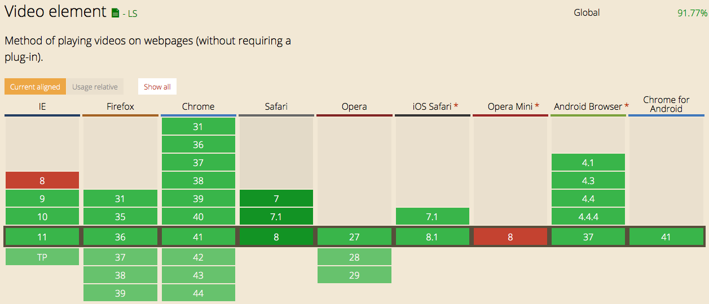

Das Video Element wird in allen modernen Browser unterstützt:
IE < 9 zähle ich hierbei absichtlich nicht als "modernen" Browser. Der einzige Unterschied zwischen den Browsern besteht in den abspielbaren Videoformaten. Daher ist es von Vorteil, verschiedene Formate anzugeben und den Browser entscheiden zu lassen, welches er abspielen will (so wie es oben gemacht wird). Weitere Informationen zu den verschiedenen Formaten finden Sie unter folgenden Links: